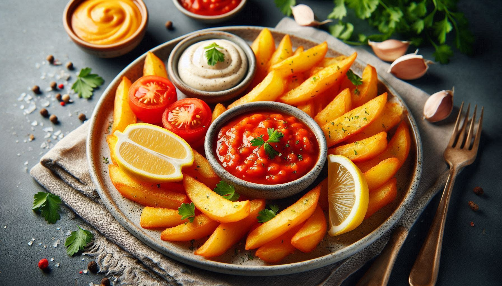

Patatas Bravas

Description:
Patatas bravas are fried potatoes that are fiercely textured, fiercely flavored, fiercely presented, and fiercely enjoyed!
- Prep Time: 25min
- Cook Time: 20min
- Additional Time: 45min
- Total Time: 1hr 30min
- Servings: 4
Ingredients:
Dipping Sauce:
- 1 clove garlic, minced, or more to taste
- ½ teaspoon smoked paprika
- 1 pinch salt
- 1 cup mayonnaise
- 1 tablespoon sherry vinegar, or more to taste
- 1 teaspoon tomato paste
- ¼ teaspoon ground chipotle peppers
- 1 pinch cayenne pepper, or more to taste
Spice Blend:
- 1 tablespoon salt
- ½ teaspoon ground black pepper
- ½ teaspoon paprika
- ½ teaspoon ground chipotle peppers
Potatoes:
- 2 quarts cold water
- 1 tablespoon salt
- 1 teaspoon smoked paprika
- 1 teaspoon ground cumin
- 2 bay leaves
- 2 pounds russet potatoes, peeled and cut into 1-inch cubes
- 2 cups vegetable oil for frying
Directions:
-
Step 1: Make dipping sauce
- Combine garlic, smoked paprika, and salt in a mortar and pestle or food processor; process until smooth.
- Mix in mayonnaise, sherry vinegar, tomato paste, chipotle chile powder, and cayenne pepper until combined.
- Cover and refrigerate sauce.
-
Step 2: Make spice blend
- Mix together salt, black pepper, paprika, and chipotle chile powder in a small bowl.
- Set aside.
-
Step 3: Make potatoes
- Pour water into a large saucepan.
- Stir salt, smoked paprika, cumin, and bay leaves into water.
- Bring to a boil, reduce heat to low, and cover; simmer for 10 minutes.
-
Step 4: Boil potatoes
- Stir potatoes into seasoned water.
- Bring to a boil, and simmer until potatoes are tender but not fully cooked, 4 to 5 minutes.
- Drain potatoes and transfer to a wire rack to cool completely, about 45 minutes.
-
Step 5: Fry potatoes
- Heat vegetable oil in a large cast iron skillet or Dutch oven to 350 degrees F (175 degrees C).
- Add cooled potato cubes and cook, stirring frequently, until golden brown, 5 to 6 minutes.
- Transfer potatoes to a baking sheet lined with paper towels to cool slightly.
- Toss in a bowl with spice blend and serve with dipping sauce.